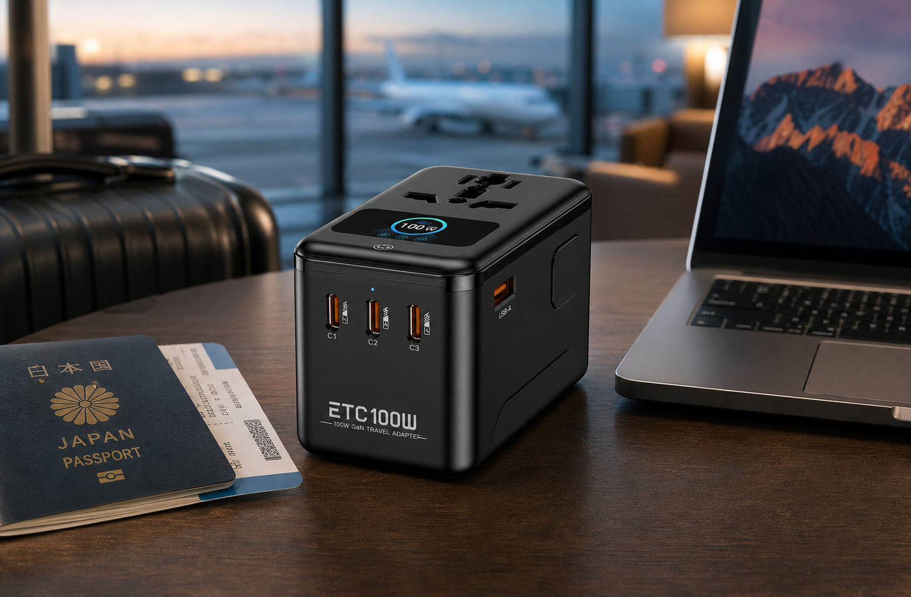
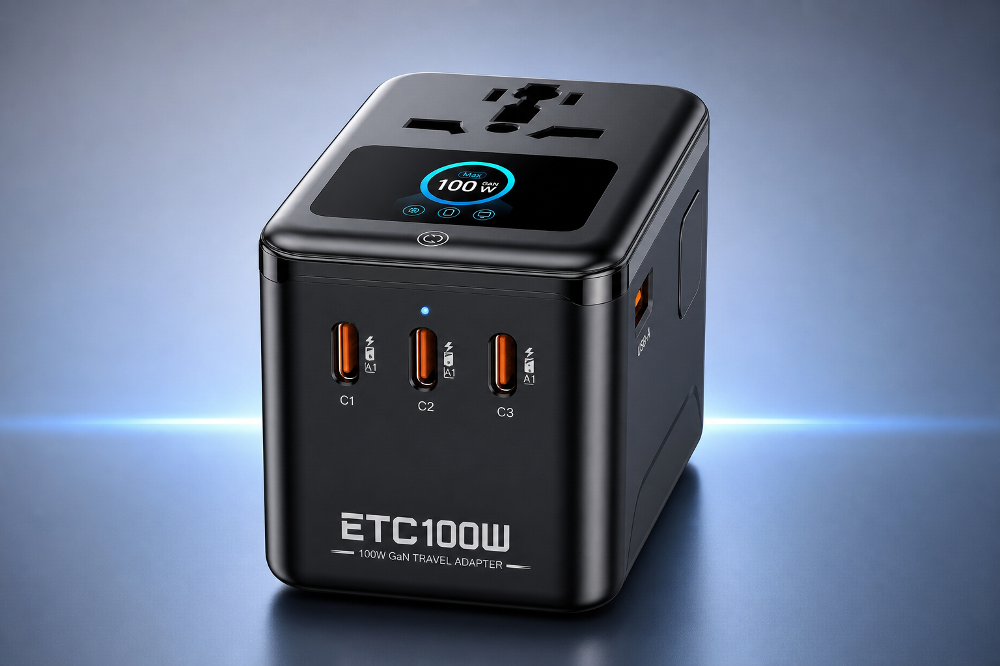

100Wクラスの出力感
小型でも「足りない」と感じにくい、日常にちょうどいいパワー感を目指しています。
小型でも「足りない」と感じにくい、日常にちょうどいいパワー感を目指しています。
複数デバイスを同時に扱いやすい構成として、仕事と外出の両方に寄せています。
1.47インチTFT とタッチスイッチで、情報の確認をシンプルにしています。
軽さとサイズ感を優先したい、日常使い中心のユーザーに向いています。
スペックが整理されているので、社内共有や提案資料にも載せやすい構成です。
価格や購入先が未確定でも、CTA を後から置き換えやすいようにしています。
本地版では、製品の輪郭と表示の見やすさが伝わるように、画像を大きめに配置しています。

